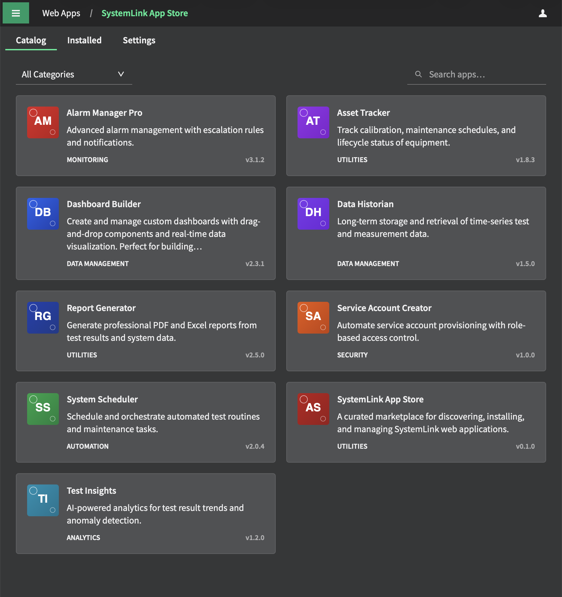

Browse, install, and update custom web applications for NI SystemLink directly from your instance. A curated marketplace powered by a standard NI package feed.

The App Store handles the entire app lifecycle — from discovery to installation to updates — without leaving SystemLink.
Browse vetted, security-reviewed apps with rich metadata, icons, and screenshots — all within SystemLink's Content Security Policy.
Download the package from the replicated feed and deploy it as a WebApp in any workspace — no manual file handling required.
When publishers release new versions, a "Refresh Feed" in settings syncs the catalog. Upgrade all installed apps in one click.
All install, upgrade, and publish operations are available as slcli appstore commands for CI/CD pipelines and power users.
Install apps to one or many workspaces in a single operation. Manage workspace deployments independently or in bulk.
All submissions are reviewed for CSP compliance and security issues. SHA256 checksums and optional OpenPGP feed signing protect against tampering.
The App Store is itself a SystemLink web application. Install it once, and it handles discovery and installation of all other apps from there.
Grab the latest AppStore.nipkg from the GitHub Releases page. This is the bootstrap package — no SystemLink-side setup is needed first.
Open your SystemLink instance, navigate to Web Applications in the administration section, and upload the downloaded .nipkg file. The Web Application service handles extraction and deployment automatically.
The App Store will now appear in your SystemLink navigation. Open it, and the onboarding wizard will guide you through connecting to the public feed and selecting a default workspace. Then you're ready to browse the catalog.
Submissions go through a PR-based review process. Build your app, package it, and submit a pull request — CI takes care of the rest.
# build your Angular webapp first ng build --configuration production # package + generate submission branch slcli appstore publish dist/browser/ \ --name "my-awesome-dashboard" \ --version "1.0.0" \ --category "Dashboard" \ --prepare-pr # push and open the PR git push origin submit/my-awesome-dashboard-v1.0.0
Version must be MAJOR.MINOR.PATCH. CI rejects non-semver versions automatically.
SVG or PNG, max 128×128 px. Icons are base64-encoded into the feed index for CSP compliance.
No external network calls outside SystemLink's own APIs. Reviewed as part of the PR process.
MIT, Apache-2.0, or specify your SPDX license identifier. Commercial / proprietary apps also accepted.
CI checks the .nipkg against the size limit and rejects over-sized submissions.
Build apps in any repository and trigger a submission PR here automatically via repository_dispatch.